FRGMNT
Fragments defines a new era of style, where every design is a curated piece of a larger aesthetic puzzle. We believe that modern fashion is built through the thoughtful assembly of textures, silhouettes, and clean, minimalist lines. Each collection serves as a medium for self-expression, allowing the wearer to construct their own unique narrative. By blending functional versatility with an avant-garde spirit, we create pieces that transcend fleeting trends. We focus on premium, sustainable materials that offer both superior comfort and long-lasting quality. Our philosophy celebrates the beauty found in simplicity and the power of understated, refined details. At Fragments, we are not just creating clothes; we are providing the essential elements for your personal evolution. Experience a brand that honors the balance between modern sophistication and individual identity.
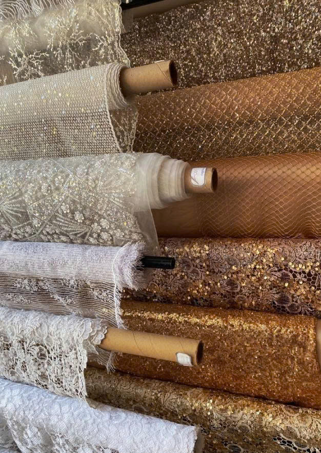
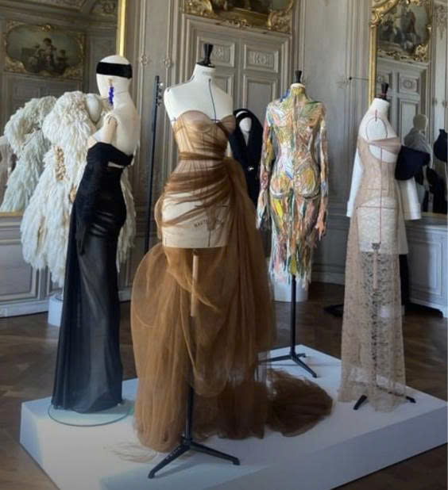
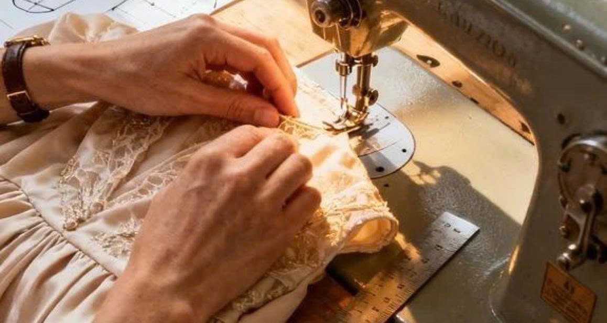
Fabric
We source premium, sustainable textiles as the foundation of every design. These natural fibers ensure both lasting structure and unmatched comfort.
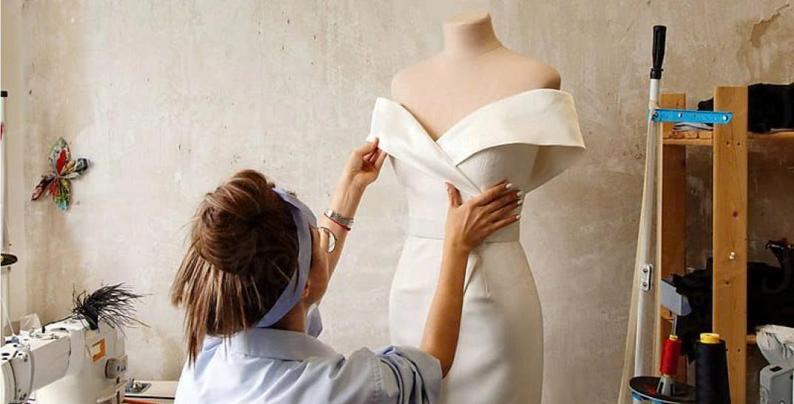
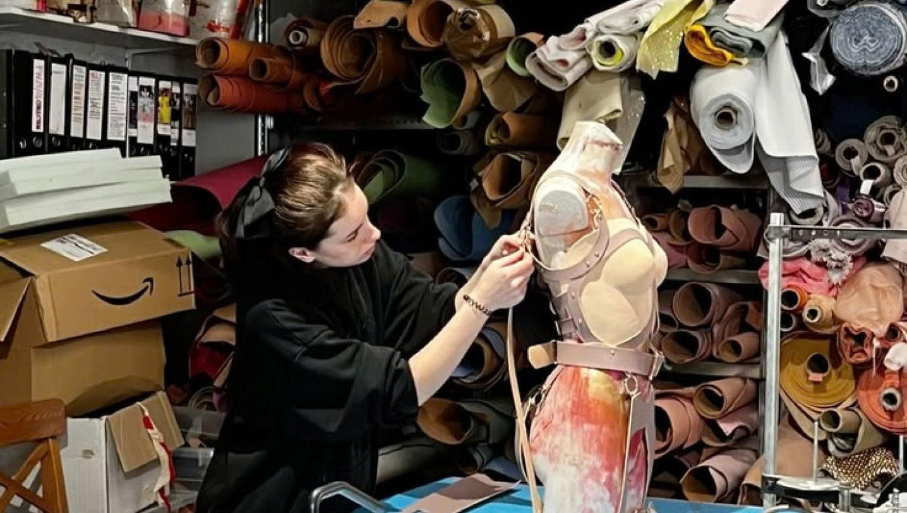
Form
We prioritize architectural balance to highlight the body's natural geometry. Each piece maintains a fluid structure while allowing complete freedom of movement.
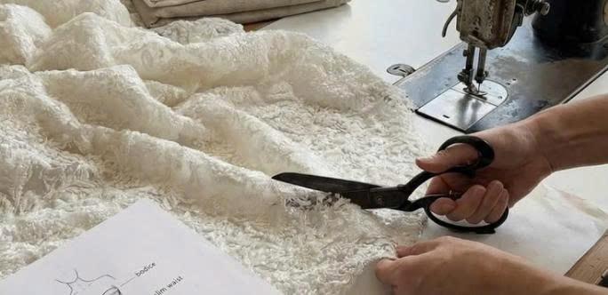
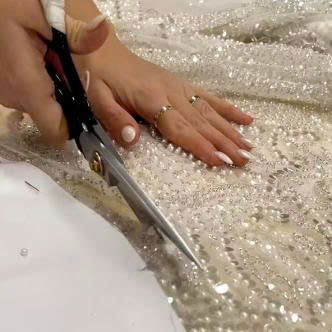
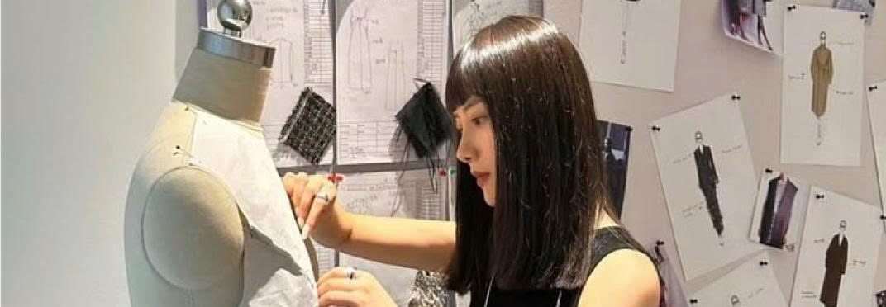
Cut
Precision is our hallmark, utilizing advanced tailoring for sharp, intentional lines. Every seam is strategically placed to enhance the perfect drape.
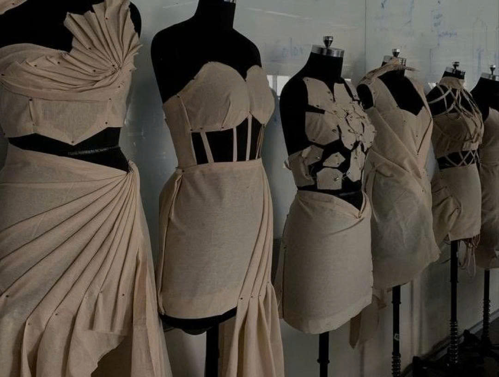
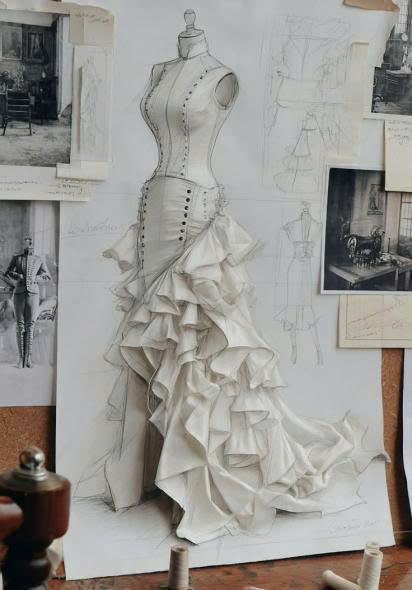
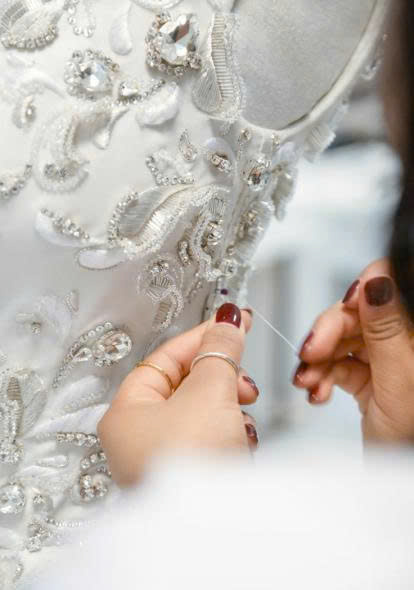
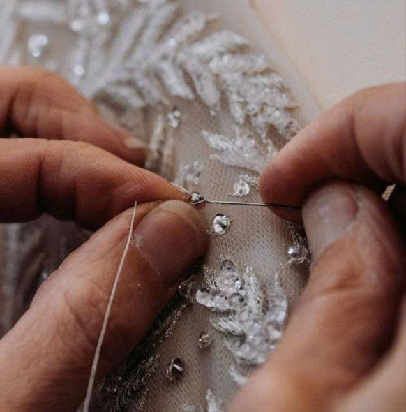
Texture
We create visual depth through tactile contrast and organic, rich finishes. Texture adds complexity without the need for prints or logos.